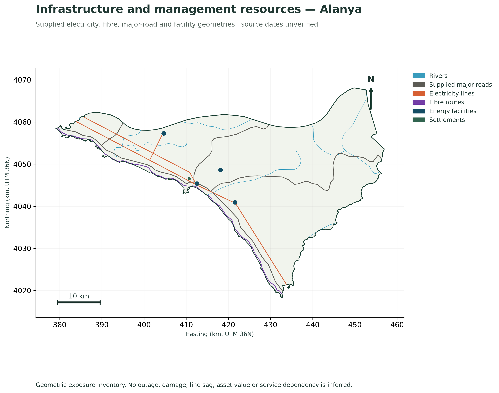
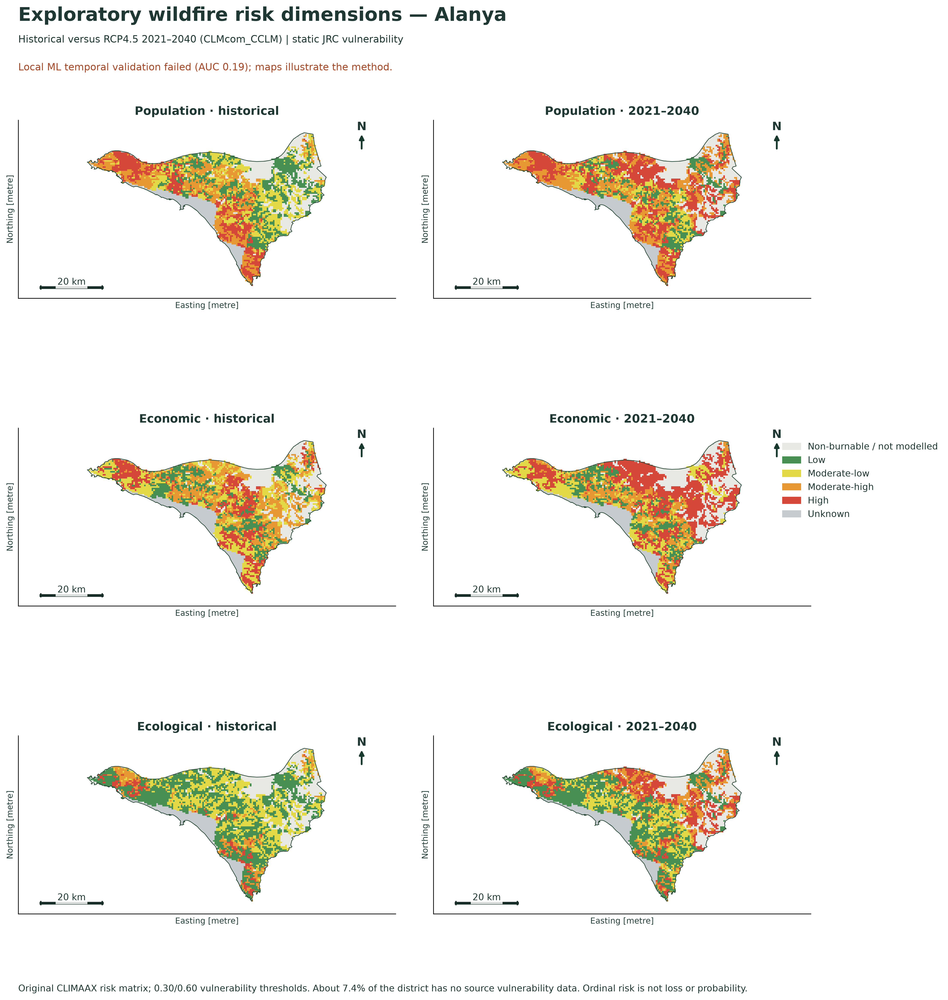
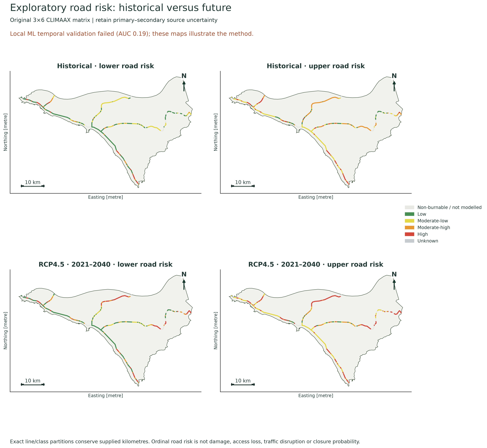
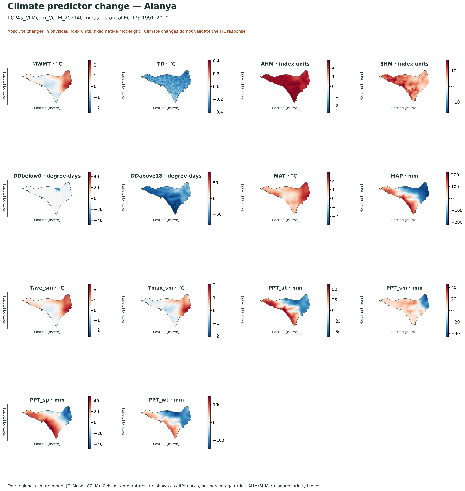
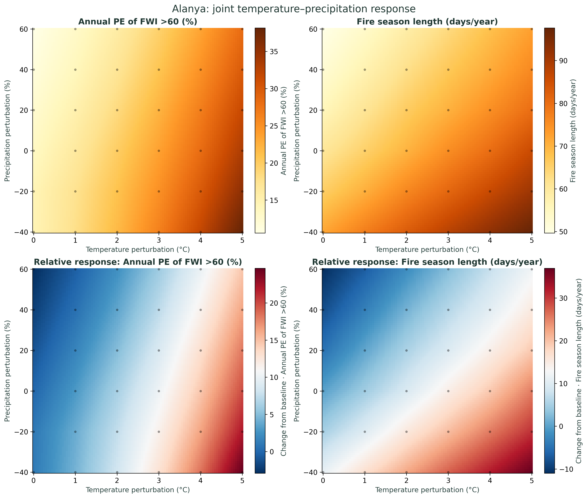
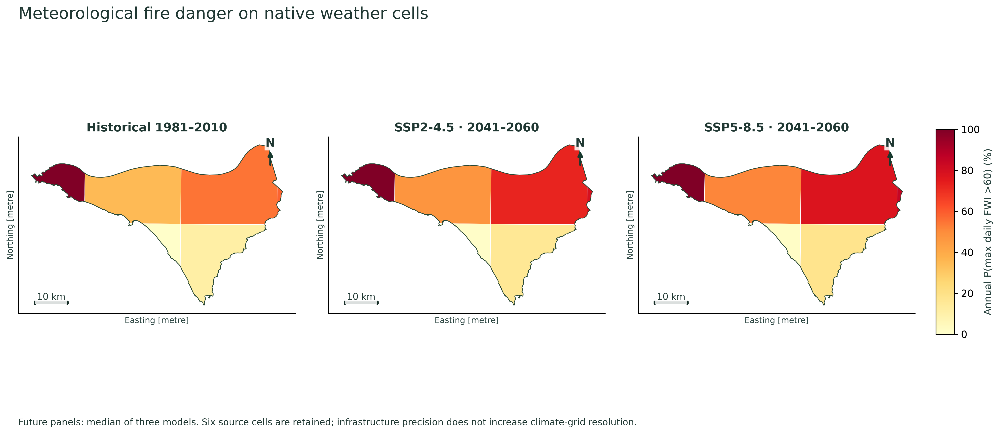
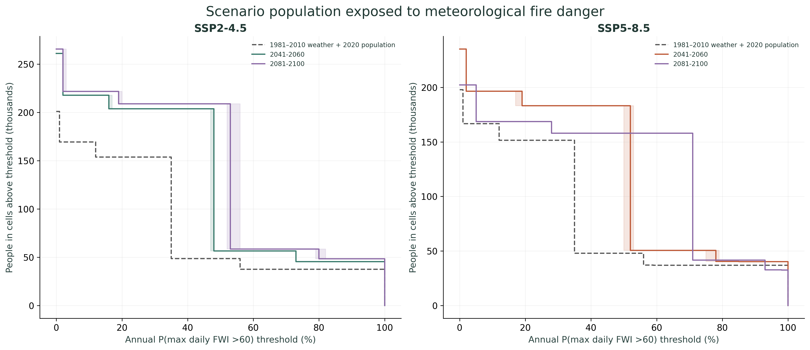
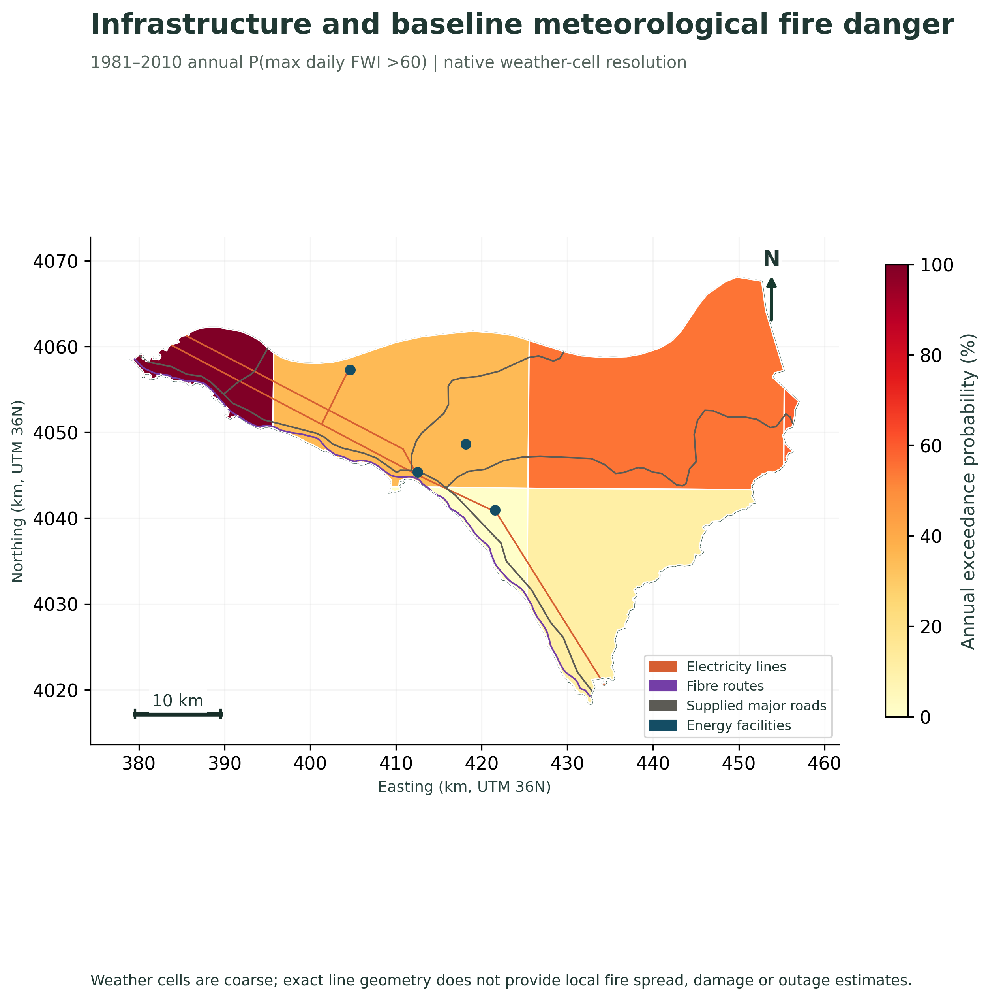
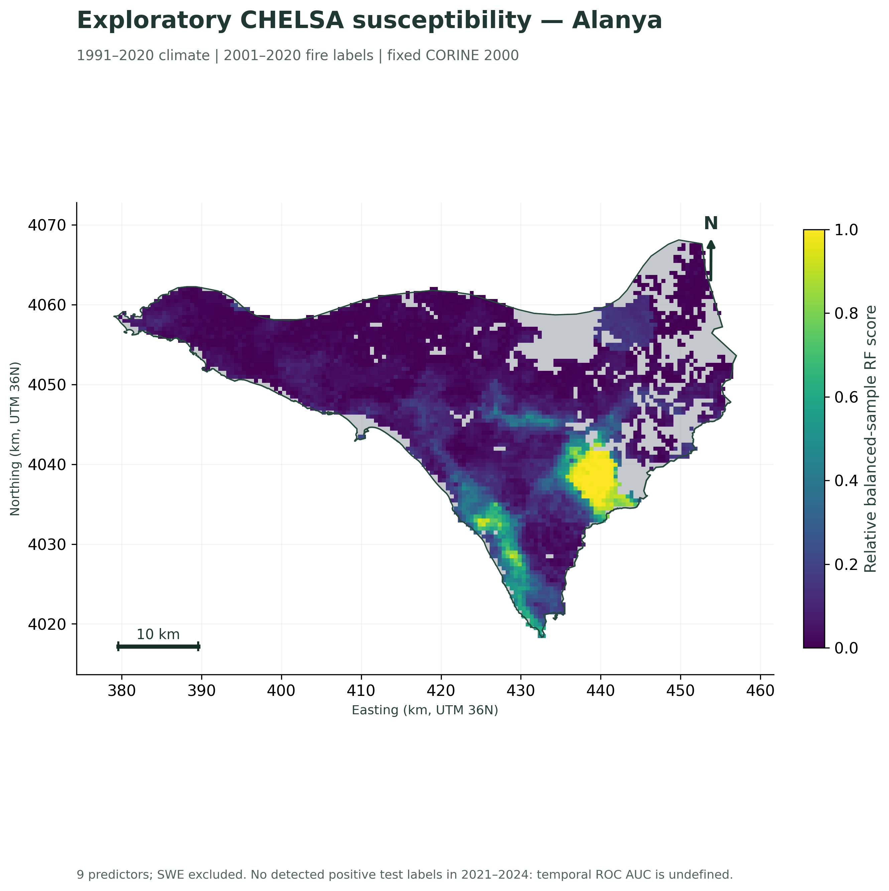
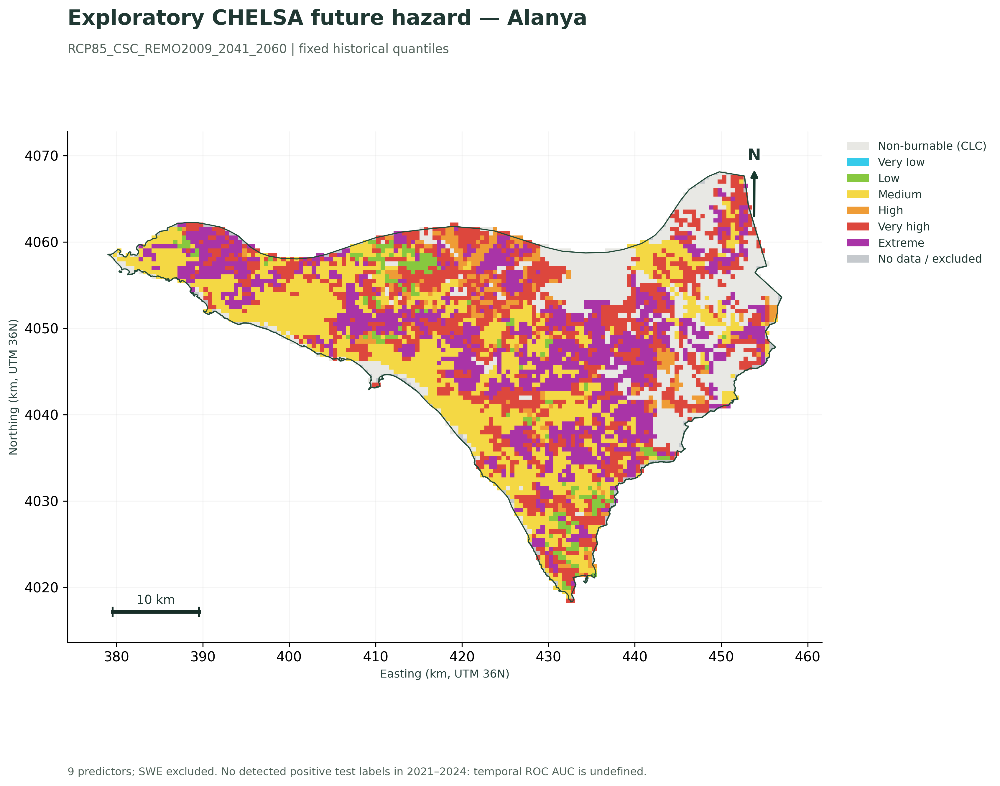

P2R Alanya | CLIMAAX FIRE adaptation v2.0.0 | source review: 17 October 2026 | English analytical outputs
All figures · Infrastructure atlas · Institutional resources atlas · Coverage table
The ten official FIRE notebooks (four ML, two FWI product/risk and four response notebooks) were reviewed. Alanya adapters and the unchanged originals are supplied together. Source coverage, successful code execution and scientific validation are distinct states. Authenticated EWDS 1981–2025 and CDS seasonal FWI products are not downloaded in this package; working public-FWI response results are labelled 1981–2010 and do not substitute their product identity. Full five-variable Pareto remains unavailable because raw protected-area/irreplaceability inputs have no valid district coverage. Aggregated ecological vulnerability is a different JRC product and is included with about 92.6% source coverage.
| layer | label | features | length_km | area_ha | interpretation |
|---|---|---|---|---|---|
| TR_MJ_road_WGS84 | Supplied major roads | 7 | 154.619 | Not assessed | Inventory of supplied geometry, not a current exhaustive asset census. |
| TR_PS_District_Center_GCS | District centres | 1 | Not assessed | Not assessed | Inventory of supplied geometry, not a current exhaustive asset census. |
| TR_PS_Places_GCS | Settlements | 1 | Not assessed | Not assessed | Inventory of supplied geometry, not a current exhaustive asset census. |
| TR_rivers | Rivers | 9 | 125.877 | Not assessed | Inventory of supplied geometry, not a current exhaustive asset census. |
| elektrik | Electricity lines | 5 | 104.291 | Not assessed | Inventory of supplied geometry, not a current exhaustive asset census. |
| fiberhat | Fibre routes | 9 | 69.085 | Not assessed | Inventory of supplied geometry, not a current exhaustive asset census. |
| santraller | Energy facilities | 4 | Not assessed | Not assessed | Inventory of supplied geometry, not a current exhaustive asset census. |
Counts are source features, not unique physical roads/circuits, current operating assets or verified service connections. ED50 source data are transformed from EPSG:4230. Missing/ambiguous CRSs, misleading map-sheet rectangles and duplicate/empty sources are flagged. CAPACITY units are unknown; zero/unfilled GUCU_MW is not zero generation capacity. No replacement costs, asset fragility, functional connectivity or electricity/telecom service populations were supplied.
| working_boundary_km2 | supplied_boundary_km2 | intersection_km2 | symmetric_difference_km2 | intersection_over_union | decision |
|---|---|---|---|---|---|
| 1,498.605 | 1,470.344 | 1,301.438 | 366.073 | 0.780 | Existing working district retained; supplied older boundary retained for sensitivity/context. No unreviewed rescope. |
| layer | scope | source_features_intersecting | clipped_length_km | point_count | scope_area_km2 | meaning |
|---|---|---|---|---|---|---|
| elektrik | working_district | 5 | 104.291 | Not assessed | 1,498.605 | Geometric sensitivity to unresolved district boundaries; neither source boundary is asserted to be authoritative. |
| elektrik | supplied_legacy_district | 5 | 106.738 | Not assessed | 1,470.344 | Geometric sensitivity to unresolved district boundaries; neither source boundary is asserted to be authoritative. |
| elektrik | common_intersection | 5 | 101.398 | Not assessed | 1,301.438 | Geometric sensitivity to unresolved district boundaries; neither source boundary is asserted to be authoritative. |
| fiberhat | working_district | 9 | 69.085 | Not assessed | 1,498.605 | Geometric sensitivity to unresolved district boundaries; neither source boundary is asserted to be authoritative. |
| fiberhat | supplied_legacy_district | 9 | 72.157 | Not assessed | 1,470.344 | Geometric sensitivity to unresolved district boundaries; neither source boundary is asserted to be authoritative. |
| fiberhat | common_intersection | 9 | 64.916 | Not assessed | 1,301.438 | Geometric sensitivity to unresolved district boundaries; neither source boundary is asserted to be authoritative. |
| TR_MJ_road_WGS84 | working_district | 7 | 154.619 | Not assessed | 1,498.605 | Geometric sensitivity to unresolved district boundaries; neither source boundary is asserted to be authoritative. |
| TR_MJ_road_WGS84 | supplied_legacy_district | 9 | 146.530 | Not assessed | 1,470.344 | Geometric sensitivity to unresolved district boundaries; neither source boundary is asserted to be authoritative. |
| TR_MJ_road_WGS84 | common_intersection | 7 | 141.130 | Not assessed | 1,301.438 | Geometric sensitivity to unresolved district boundaries; neither source boundary is asserted to be authoritative. |
| santraller | working_district | 4 | Not assessed | 4.000 | 1,498.605 | Geometric sensitivity to unresolved district boundaries; neither source boundary is asserted to be authoritative. |
| santraller | supplied_legacy_district | 3 | Not assessed | 3.000 | 1,470.344 | Geometric sensitivity to unresolved district boundaries; neither source boundary is asserted to be authoritative. |
| santraller | common_intersection | 3 | Not assessed | 3.000 | 1,301.438 | Geometric sensitivity to unresolved district boundaries; neither source boundary is asserted to be authoritative. |
| TR_rivers | working_district | 9 | 125.877 | Not assessed | 1,498.605 | Geometric sensitivity to unresolved district boundaries; neither source boundary is asserted to be authoritative. |
| TR_rivers | supplied_legacy_district | 10 | 125.974 | Not assessed | 1,470.344 | Geometric sensitivity to unresolved district boundaries; neither source boundary is asserted to be authoritative. |
| TR_rivers | common_intersection | 8 | 108.584 | Not assessed | 1,301.438 | Geometric sensitivity to unresolved district boundaries; neither source boundary is asserted to be authoritative. |
Working geoBoundaries/OSM geometry, supplied legacy district geometry and forestry-plan scope are different. No boundary is silently substituted. All maps and lengths use the declared working district unless explicitly labelled as sensitivity results. Institutional2017 totals disagree between older and newer plans and do not become spatial training labels.
| cell | baseline | pe_percent | pe_bootstrap_low | pe_bootstrap_high | fsl_mean_days | return20_fwi |
|---|---|---|---|---|---|---|
| district_area_mean | 1981-2010 | 13.489 | 5.489 | 19.851 | 60.667 | 65.415 |
| 9790 | 1981-2010 | 100.000 | 100.000 | 100.000 | 67.300 | 91.890 |
| 9791 | 1981-2010 | 34.841 | 23.775 | 45.140 | 39.333 | 74.268 |
| 9792 | 1981-2010 | 55.033 | 44.529 | 68.351 | 65.733 | 74.114 |
| 9793 | 1981-2010 | 58.298 | 44.910 | 73.508 | 68.400 | 72.340 |
| 9887 | 1981-2010 | 0.799 | 0.183 | 1.899 | 21.200 | 52.324 |
| 9888 | 1981-2010 | 11.064 | 5.640 | 17.357 | 28.433 | 64.739 |
Annual PE means P(max daily FWI >60) in a year, fitted to 30 annual maxima with a Gumbel survival function. Six native weather cells are retained. District-area-mean FWI has different extremes from individual cells. Baseline season-length cutoff is half the baseline fitted20-year return level and remains fixed under perturbation.200-resample bootstrap intervals describe short-sample statistical uncertainty; local fire-incident calibration is unavailable.
| scenario | period | models_available | ensemble_size | band | pe_percent_min | pe_percent_median | pe_percent_max | fsl_mean_days_min | fsl_mean_days_median | fsl_mean_days_max | dt_C_min | dt_C_median | dt_C_max | dp_percent_min | dp_percent_median | dp_percent_max |
|---|---|---|---|---|---|---|---|---|---|---|---|---|---|---|---|---|
| ssp245 | 2021-2040 | 3 | 3 | minimum/maximum across three selected models, not a confidence interval | 17.127 | 17.868 | 18.273 | 67.746 | 68.303 | 69.559 | 1.038 | 1.241 | 1.546 | -11.556 | -10.868 | 0.215 |
| ssp245 | 2041-2060 | 3 | 3 | minimum/maximum across three selected models, not a confidence interval | 19.940 | 20.173 | 20.212 | 71.193 | 74.358 | 75.169 | 1.680 | 1.807 | 2.048 | -22.272 | -17.521 | -3.123 |
| ssp245 | 2061-2080 | 3 | 3 | minimum/maximum across three selected models, not a confidence interval | 22.424 | 22.509 | 22.855 | 75.801 | 76.581 | 79.938 | 2.393 | 2.442 | 2.527 | -25.350 | -14.092 | -10.066 |
| ssp245 | 2081-2100 | 3 | 3 | minimum/maximum across three selected models, not a confidence interval | 23.368 | 23.802 | 24.701 | 76.635 | 77.042 | 82.633 | 2.767 | 2.802 | 2.890 | -27.331 | -8.743 | -7.964 |
| ssp585 | 2021-2040 | 3 | 3 | minimum/maximum across three selected models, not a confidence interval | 16.651 | 17.910 | 18.559 | 66.885 | 67.679 | 70.096 | 0.950 | 1.215 | 1.718 | -13.970 | -7.224 | 4.688 |
| ssp585 | 2041-2060 | 3 | 3 | minimum/maximum across three selected models, not a confidence interval | 21.253 | 22.834 | 23.573 | 75.528 | 76.835 | 77.202 | 2.124 | 2.563 | 2.794 | -15.866 | -12.901 | -10.189 |
| ssp585 | 2061-2080 | 3 | 3 | minimum/maximum across three selected models, not a confidence interval | 28.712 | 28.877 | 29.215 | 84.368 | 86.515 | 88.544 | 3.547 | 3.777 | 3.803 | -34.012 | -24.601 | -17.521 |
| ssp585 | 2081-2100 | 1 | 3 | minimum/maximum across three selected models, not a confidence interval | 36.158 | 36.158 | 36.158 | 93.864 | 93.864 | 93.864 | 4.721 | 4.892 | 5.935 | -43.254 | -37.356 | -30.062 |
MPI-ESM1-2-LR, MRI-ESM2-0 and IPSL-CM6A-LR, common r1i1p1f1 member, monthly Amon tas/pr. Native GCM/district intersection weights; model calendars retained. Temperature and precipitation anomalies use each model’s 1981–2010 baseline. SSP2-4.5/SSP5-8.5 are separate from ML RCP pathways. The response perturbation domain is−40…+60% precipitation and0…+5°C. Two SSP5-8.5 late-century model cases exceed+5°C and remain missing; only one model contributes there, so ensemble spread is not assessable. Bilinear interpolation is bounded. The upstream degree-four polynomial is separately reproduced and checked for physical bounds.
SSP2/SSP5 population rasters are scenarios, including their2020 maps; they are not official current Alanya residents or seasonal tourist counts. People/cell counts are integrated by source-pixel fractions against district/native weather-cell intersections, conserving counts. Population years2030/2050/2070/2090 match the four20-year climate windows. Fixed2020 population is exported separately to distinguish demographic and climate effects. “Affected” counts people living in cells above a chosen annual weather-PE threshold; no fire footprint or casualty calculation is implied.
Electricity, fibre and roads are partitioned into disjoint native weather/hazard-cell segments with conserved kilometres. Four energy facilities are sampled as points. Historical MODIS burned-cell coincidence, vegetation proximity100/300/500m, boundary sensitivity and shared-corridor candidates are supplied. Coincidence/proximity does not establish asset damage, a fire cause, road closure, functional dependency or cascading outage. WorldCover tree cover may include orchards.
Historical2001–2024 MODIS burned-cell overlap (km), with no inference of actual damage:
| layer | source_length_km | burn_cell_overlap_km |
|---|---|---|
| TR_MJ_road_WGS84 | 154.619 | 0.970 |
| elektrik | 104.291 | 0.881 |
| fiberhat | 69.085 | 0.000 |
Baseline1981–2010 line kilometres in native cells above annual PE20%/50% (FWI60), followed by mid-century2041–2060 PE50% exposed-length model min/median/max:
| layer | total_length_km | length_in_cells_annual_pe_gt20_km | length_in_cells_annual_pe_gt50_km |
|---|---|---|---|
| TR_MJ_road_WGS84 | 154.619 | 124.745 | 70.594 |
| elektrik | 104.291 | 74.465 | 24.955 |
| fiberhat | 69.085 | 38.040 | 18.021 |
| layer | scenario | min | median | max |
|---|---|---|---|---|
| TR_MJ_road_WGS84 | ssp245 | 70.594 | 70.594 | 70.594 |
| TR_MJ_road_WGS84 | ssp585 | 70.594 | 124.745 | 124.745 |
| elektrik | ssp245 | 24.955 | 24.955 | 24.955 |
| elektrik | ssp585 | 24.955 | 74.465 | 74.465 |
| fiberhat | ssp245 | 18.021 | 18.021 | 18.021 |
| fiberhat | ssp585 | 18.021 | 38.040 | 38.040 |
Mid-century scenario population in native cells above annual PE50% (model spread):
| scenario | total_scenario_people | annual_pe_gt50_people_min | annual_pe_gt50_people_median | annual_pe_gt50_people_max |
|---|---|---|---|---|
| ssp245 | 261,023.487 | 56,460.712 | 56,460.712 | 56,460.712 |
| ssp585 | 235,101.464 | 50,572.894 | 183,231.615 | 183,231.615 |
At300m all accepted supplied line geometries lie near WorldCover tree/shrub/grass classes; this includes possible orchards and is a proximity screen. At500m about1.139km of electricity geometry and1.023km of fibre geometry are near the other source layer; this is a candidate corridor, not an established dependency. Four complete FWI-cell Pareto profiles cover about66.1% of district area and all are non-dominated; there is no unique spatial ranking from these selected indicators. Field verification should first establish current geometry, source dates, road subtypes and network/service connections before intervention or outage modelling.










| variable | finite_native_district_cells | positive_fire_cells_supported | total_burnable_training_positive_cells | missing_is_not_zero |
|---|---|---|---|---|
| bio01d | 6982 | 118 | 118 | True |
| bio04d | 6982 | 118 | 118 | True |
| bio12d | 6982 | 118 | 118 | True |
| bio15d | 6982 | 118 | 118 | True |
| cdd | 6982 | 118 | 118 | True |
| fd | 6982 | 118 | 118 | True |
| gdd5 | 6982 | 118 | 118 | True |
| prsd | 6982 | 118 | 118 | True |
| scd | 6982 | 118 | 118 | True |
| swe | 849 | 0 | 118 | True |
All ten source variables are audited. SWE has no valid support at any burned training cell, so the full ten-variable model cannot be fitted without inventing missing values. The explicit config option runs a nine-predictor sensitivity excluding SWE on118 positive training cells; all images and GeoTIFFs identify this variant. The2021–2024 held-out sample contains no positive MODIS detections, so temporal discrimination remains undefined. This is a method example, not a validated replacement for the failed ECLIPS model. Native CHELSA unit metadata have gaps/inherited aggregation labels; no annual precipitation total or frost-day-derived humidity is inferred.
| branch | analysis | notebooks | state | result_file | source_url | limitation |
|---|---|---|---|---|---|---|
| ML/ECLIPS | Native fire labels, terrain, vegetation and 14 climate predictors | 04–06 | complete | outputs/downloads/ml_modis_district_annual_detected_area.csv | https://handbook.climaax.eu/notebooks/workflows/FIRE/01_wildfire_ML/Hazard_assessment_FIRE_ML.html | Native MODIS labels; fixed pre-training CORINE 2000; no institutional totals rasterized. |
| ML/ECLIPS | Spatial RF testing and later-period transfer | 05 | validation_failed | outputs/tables/ml_model_validation.csv | https://handbook.climaax.eu/notebooks/workflows/FIRE/01_wildfire_ML/Hazard_assessment_FIRE_ML.html | 11 positive training cells; later ROC AUC≈0.19 fails discrimination. Not validated planning maps. |
| ML/ECLIPS | Future susceptibility, hazard and climate novelty | 06 | method_example_validation_failed | outputs/tables/ml_future_scenario_summary.csv | https://handbook.climaax.eu/notebooks/workflows/FIRE/01_wildfire_ML/Hazard_assessment_FIRE_ML.html | One RCM, two RCPs and two periods; fixed thresholds and static land cover. |
| ML/CHELSA | Full ten-predictor source intersection | 14 | insufficient_positive_support | outputs/tables/chelsa_predictor_spatial_support.csv | https://handbook.climaax.eu/notebooks/workflows/FIRE/01_wildfire_ML/Hazard_assessment_FIRE_ML_CHELSA.html | All ten sources audited; SWE missing at every burned training cell gives zero positive support. Full ten-variable model not fitted. |
| ML/CHELSA | Explicit nine-predictor sensitivity and RF | 14 | unvalidated_no_later_positive_labels | outputs/tables/chelsa_model_validation.csv | https://handbook.climaax.eu/notebooks/workflows/FIRE/01_wildfire_ML/Hazard_assessment_FIRE_ML_CHELSA.html | SWE excluded explicitly after QA; 1991–2020 climate, 2001–2020 training and zero-positive2021–2024 test. No successful temporal validation; source-unit metadata limits retained. |
| ML risk | Population, economic, ecological and combined vulnerability | 08 | exploratory_validation_failed | outputs/tables/ml_vulnerability_source_coverage.csv | https://handbook.climaax.eu/notebooks/workflows/FIRE/01_wildfire_ML/Risk_assessment_FIRE_ML.html | Original risk matrix, 0.30/0.60 thresholds, valid zero, unknown separate. Approx.92.6% native source coverage. |
| ML risk | Area-weighted aggregation to analysis zones | 08 | exploratory_validation_failed | outputs/tables/ml_risk_5km_zone_summary.csv | https://handbook.climaax.eu/notebooks/workflows/FIRE/01_wildfire_ML/Risk_assessment_FIRE_ML.html | 5 km analyst grid, not neighbourhood boundaries; >=90% known coverage, class shares exported. |
| ML risk | Road vulnerability and historical/future road risk | 08–09 | exploratory_validation_failed | outputs/tables/road_risk_uncertainty_length_summary.csv | https://handbook.climaax.eu/notebooks/workflows/FIRE/01_wildfire_ML/Risk_assessment_FIRE_ML.html | Source combines primary/secondary; use class1–2 risk envelope; exact line lengths. |
| ML change | 14-predictor physical-unit change panels | 09 | exploratory_validation_failed | outputs/tables/ml_climate_absolute_changes.csv | https://handbook.climaax.eu/notebooks/workflows/FIRE/01_wildfire_ML/Change_assessment_FIRE_ML.html | All four futures; Celsius differences, not misleading temperature percentages. |
| ML change | Susceptibility difference and hazard/risk transitions | 06/09 | exploratory_validation_failed | outputs/tables/ml_hazard_transition_matrix.csv | https://handbook.climaax.eu/notebooks/workflows/FIRE/01_wildfire_ML/Change_assessment_FIRE_ML.html | Risk direction/transition is ordinal, not expected loss change. |
| FWI products | Daily EWDS historical FWI 1981–2025 | 01 | missing_input | Not produced; see limitation | https://handbook.climaax.eu/notebooks/workflows/FIRE/02_wildfire_FWI/FWI_Hazard_Assessment.html | Implementation present; authenticated source not downloaded. Public 1981–2010 response archive is a distinct source. |
| FWI products | CDS seasonal EURO-CORDEX FWI change | 01 | missing_input | Not produced; see limitation | https://handbook.climaax.eu/notebooks/workflows/FIRE/02_wildfire_FWI/FWI_Hazard_Assessment.html | Implementation present; authenticated product not downloaded. Daily severity thresholds are not applied to seasonal means. |
| FWI risk | Fuel-normalised danger and Pareto profiles | 02/13 | partial_selected_indicators | outputs/tables/response_fwi_fuel_pareto.csv | https://handbook.climaax.eu/notebooks/workflows/FIRE/02_wildfire_FWI/FWI_Risk_Assessment.html | Executed public-FWI adaptation with danger/WUI/restoration; raw protected-area/irreplaceability remain unavailable, preventing full five-indicator Pareto. |
| Response | Historical daily/seasonal FWI and threshold days | 10 | complete_with_model_assumptions | outputs/tables/response_historical_annual.csv | https://handbook.climaax.eu/notebooks/workflows/FIRE/03_response_model_FWI/hazard_assessment_historical.html | Complete 1981–2010, six native weather cells, no fine-grid downscaling. |
| Response | Annual-maximum Gumbel and return-level diagnostics | 10 | complete_with_model_assumptions | outputs/tables/response_historical_gumbel.csv | https://handbook.climaax.eu/notebooks/workflows/FIRE/03_response_model_FWI/hazard_assessment_historical.html | Annual survival probability, Q–Q, T20 and baseline bootstrap; 30-year tail assumptions remain. |
| Response | Joint PE and season-length response tables | 11 | complete | outputs/tables/response_surface_table.csv | https://handbook.climaax.eu/notebooks/workflows/FIRE/03_response_model_FWI/hazard_assessment_response.html | All 36 true perturbation runs, native cells and district mean. |
| Response | Degree-four polynomial and bounded response comparison | 11 | complete | outputs/tables/response_polynomial_diagnostics.csv | https://handbook.climaax.eu/notebooks/workflows/FIRE/03_response_model_FWI/hazard_assessment_response.html | Official polynomial diagnosed; bounded bilinear selected; no extrapolation. |
| Response | Matched-baseline three-model SSP projections | 12 | complete_with_out_of_domain | outputs/tables/response_projection_model_spread.csv | https://handbook.climaax.eu/notebooks/workflows/FIRE/03_response_model_FWI/hazard_assessment_projections.html | CMIP6 public adaptation; own 1981–2010 references. Two late-century forcings outside +5°C; one SSP585 model remains there. |
| Response | Annual calendars and rolling climate pathway diagnostics | 12 | complete_with_out_of_domain | outputs/tables/response_cmip6_rolling20_diagnostics.csv | https://handbook.climaax.eu/notebooks/workflows/FIRE/03_response_model_FWI/hazard_assessment_projections.html | Model calendar-day weighted tas; pr flux integrated by days; overlapping windows are not independent samples. |
| Response risk | Scenario population conservation and PE curves | 13 | complete_with_scenario_assumptions | outputs/tables/response_affected_population_summary.csv | https://handbook.climaax.eu/notebooks/workflows/FIRE/03_response_model_FWI/risk_assessment_population.html | 12 real SSP count clips, fractional source-pixel area, not densities/casualties/tourists. |
| Response risk | Fixed-population counterfactual | 13 | complete_with_scenario_assumptions | outputs/tables/response_population_counterfactual_summary.csv | https://handbook.climaax.eu/notebooks/workflows/FIRE/03_response_model_FWI/risk_assessment_population.html | Same mid-century weather, fixed2020 versus SSP2050 counts; population and weather effects separated. |
| GIS extension | All-layer source, CRS and semantic audit | 07 | complete_with_quality_flags | outputs/tables/gis_all_layer_audit.csv | Supplied local evidence / Alanya extension | Missing CRS quarantined; PAFTA map-sheet rectangles not treated as lakes; source copy dates not survey dates. |
| GIS extension | Alternative district boundary sensitivity | 07 | complete_with_quality_flags | outputs/tables/gis_boundary_sensitivity_inventory.csv | Supplied local evidence / Alanya extension | Working1498.61km² and supplied1470.34km² scopes retained; different from OIM1776.97km² plan scope. |
| GIS extension | Electricity, fibre, roads and facility inventory | 07 | complete_with_quality_flags | outputs/tables/gis_district_inventory.csv | Supplied local evidence / Alanya extension | Metric clipped geometry; no reliance on geographic SHAPE_Leng or unfilled power-capacity values. |
| GIS extension | Historical observed burn-cell coincidence | 07 | complete | outputs/tables/gis_historical_burn_cell_overlap.csv | Supplied local evidence / Alanya extension | Real MODIS cells; coincidence does not prove damage, outage or a fire cause. |
| GIS extension | Vegetation proximity and shared-corridor candidates | 07 | complete_with_quality_flags | outputs/tables/gis_fuel_proximity_sensitivity.csv | Supplied local evidence / Alanya extension | Buffered WorldCover context, 100/300/500m sensitivity; orchards may be tree cover, no functional cascade model. |
| GIS extension | Future exact-line and point ML hazard overlays | 08 | exploratory_validation_failed | outputs/tables/gis_line_hazard_summary.csv | Supplied local evidence / Alanya extension | All five ECLIPS hazards, inherited failed ML diagnostic; electric/telecom fragility unavailable. |
| GIS extension | Native FWI weather exposure and facility samples | 13 | complete_exposure_only | outputs/tables/response_infrastructure_weather_summary.csv | Supplied local evidence / Alanya extension | Conserved line kilometres, baseline+24 model-future combinations; no loss or service failure probability. |
| Local evidence | Institutional fire/agricultural/resource evidence | 00/03 | complete | outputs/tables/source_quality_checks.csv | Supplied local evidence / Alanya extension | Original PDFs and workbook preserved; 2017 old/new plan conflict and forestry/district scope differences retained. |
| Local validation | Matched-scope annual/event observations | 03 | missing_input | Not produced; see limitation | Supplied local evidence / Alanya extension | No verified district-matched series/perimeters supplied. OIM totals and PDF dots are not substituted as independent spatial labels. |
| Conditional loss | Crop/asset monetary loss and functional outages | 02/07 | missing_input | Not produced; see limitation | Supplied local evidence / Alanya extension | Crop-specific spatial exposure, monetary asset values, fragility, connectivity and service populations unavailable; not fabricated. |
| check | state | detail |
|---|---|---|
| 2017 burned area across plans | unresolved | 2020-2024 narrative: 2078.610 ha; 2026-2030 Table 14 sum: 9.451 ha. Do not merge or silently correct. |
| 2018 records across plans | unresolved | Old: 15 fires / 10.300 ha; new: 18 fires / 15.912 ha. |
| 2019 records across plans | agree | 28 fires / 3.570 ha in both plans. |
| Forest area unit sum vs printed total | rounding_or_source_difference | Table 2 rows sum to 108,975 ha; printed total 108,973 ha (2-ha difference). |
| Geographic support | different_boundaries | Forestry area: 177,697 ha; downloaded district boundary: 149,860.5 ha. No district calibration from OIM totals. |
| Fuel table 7 | source_arithmetic_issue | Reported total 117,697 ha conflicts with unit/land-use totals and agricultural entries; table is retained in the PDF, not used as a spatial fuel grid. |
| Tower visibility table 19 | scope_unresolved | Visible+invisible totals 178,239.97 ha, different from 177,697 ha plan area; do not map coverage without the GIS source. |
| No reported climate losses | absence_of_record | Agriculture notes state no reported or detected climate-related losses. This is not evidence of zero loss or an observed wildfire loss series. |
| Institutional map digitisation | not_georeferenced | Embedded PDF risk/ignition maps have no delivered GIS geometry. No pixel-perfect validation or invented coordinates. |
Extract the full archive, update/create the supplied conda environment and run root notebooks00→15. Public input clips are included. Download flags default to false; only the optional authenticated products require personal EWDS/CDS access. Python text files explicitly use UTF-8/UTF-8-sig, including the Windows-Turkish manifest read that previously failed. Modules, source hashes, spatial splits, model metadata, native-source rasters, GeoPackages and CSVs accompany the notebooks. See README_TR.md and docs/FINAL_METHOD_EN.md.